>>>plot([1,2,3],"bo--",label="line_1"); #蓝色圆点虚线bo-- >>>legend() #显示lable show() #非交互式环境,显示图片命令
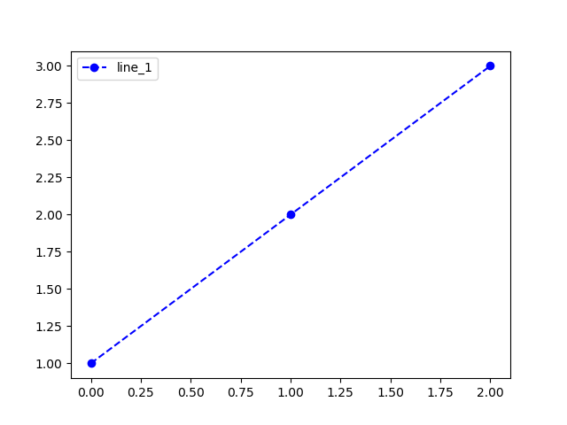
>>> plot([1,2,3]) #默认是直线图:"b-"
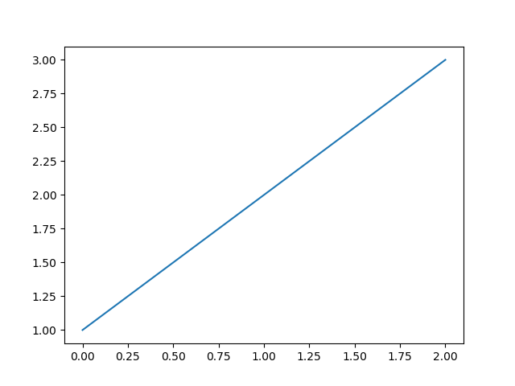
>>> plot([1,2,3,4,5,6],"ko")
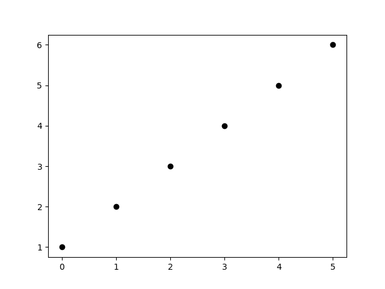
>>> bar([1,2,3],[2,4,3])
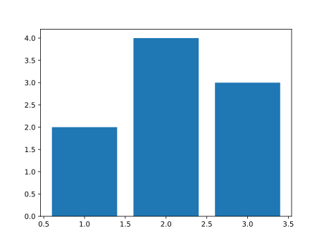
>>> barh(["one","htisd","nato","kaici","puto"],[1,4,5,2,8])
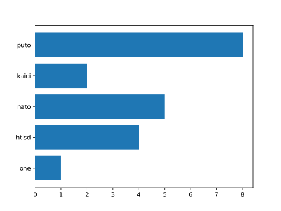
>>> subplot(121);plot([1,2,3]);subplot(122);plot([3,5,2,4])
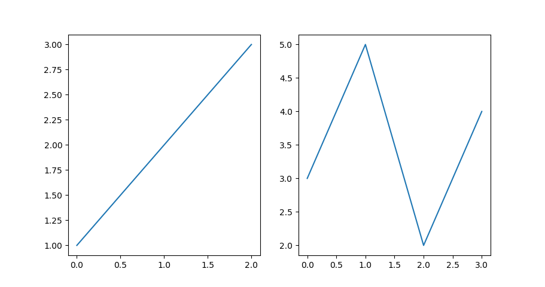
>>>polar([1,2,3,4,5,6,7,8,9,8])
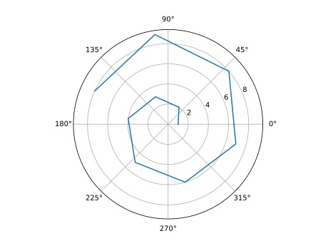
>>>polar(rand(UInt32,7),"bo--");title("7 point polar graph")
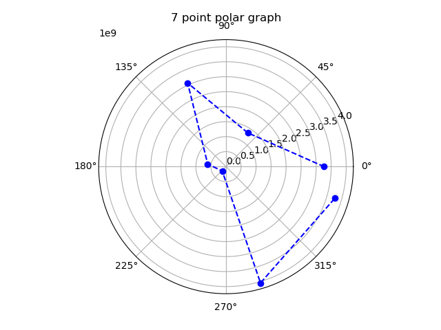
>>> matshow([[1,2],[3,4]]);title(L"this is $\frac{1}{3}$") #添加标题
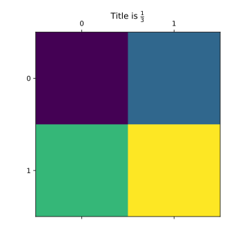
>>> pie([20,30,50],labels=["julia","python3","C++"])
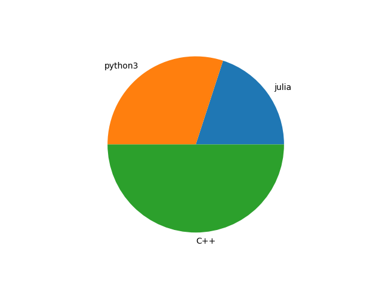
>>> pie([20,30,50],labels=["julia","python3","C++"],explode=[0.1,0.1,0.1])
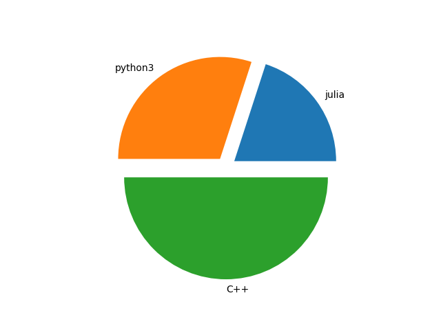
>>>stackplot([i for i=1:30],rand(UInt,30),rand(UInt,30),labels=["cpu1","cpu2"]);legend()
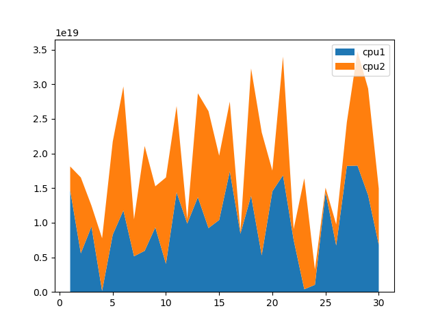
>>> data=randn(100) >>>fig, axs = plt.subplots(2, 2, figsize=(5, 5)); axs[1,1].hist(data); axs[1, 2].scatter(data, data); axs[2, 1].plot(data, data); axs[2,2].hist2d(data, data) # suptitle("主标题")
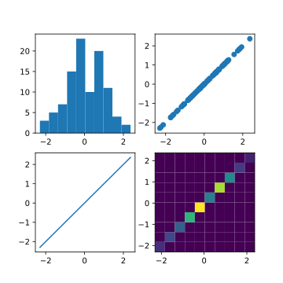
>>> eventplot(rand(5,10))
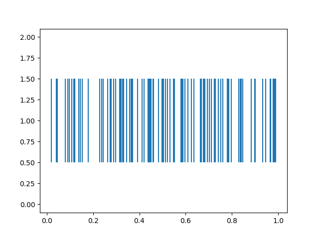
>>> eventplot(rand(3,5))
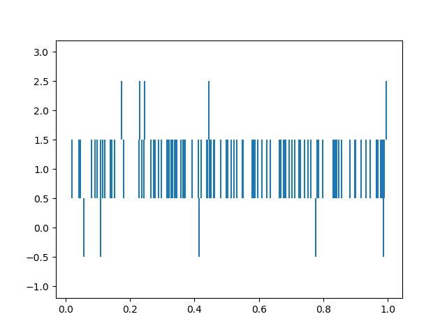
>>>hist(rand(100))
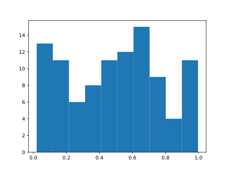
>>>hist2D([1,2,3,4],[1,3,2,1])
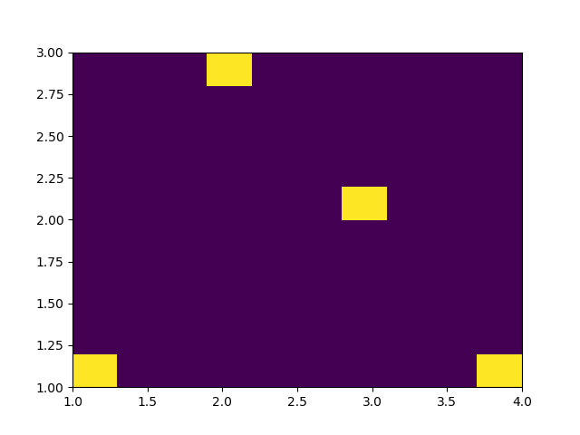
>>>stem(rand(10))
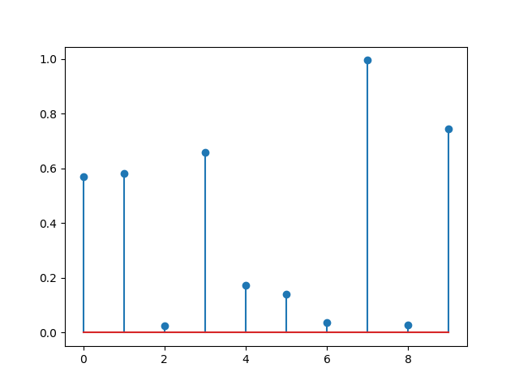
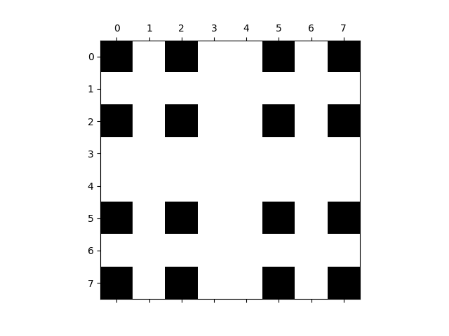
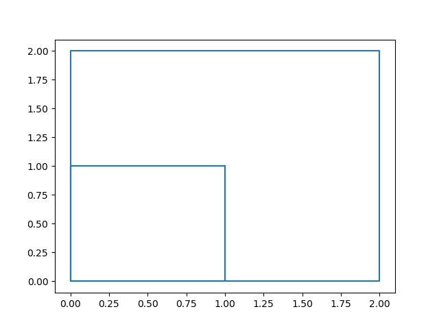
>>> scatter([i for i=1:100],randn(100));xlabel("x-show");ylabel("Y-show")
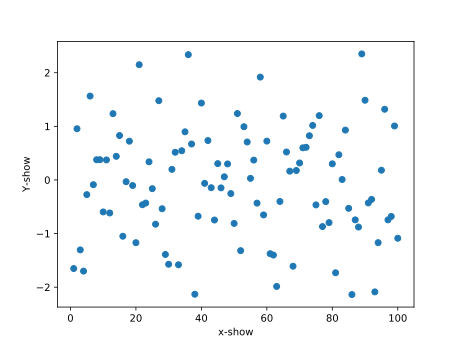
>>>scatter3D(rand(100),rand(100),rand(100))
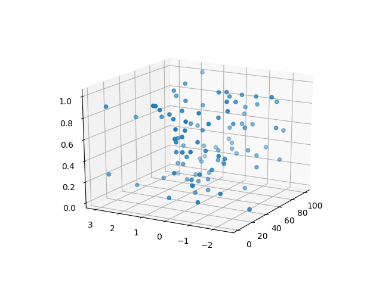
>>>surf(rand(3,4))
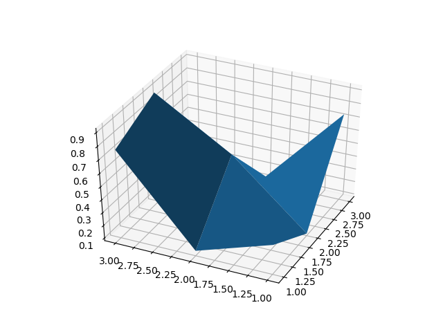
>>> mesh(rand(5),rand(5),rand(5,5))
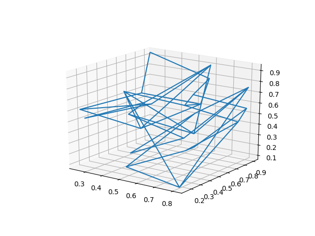
>>> plot3D(rand(10),rand(10),rand(10))
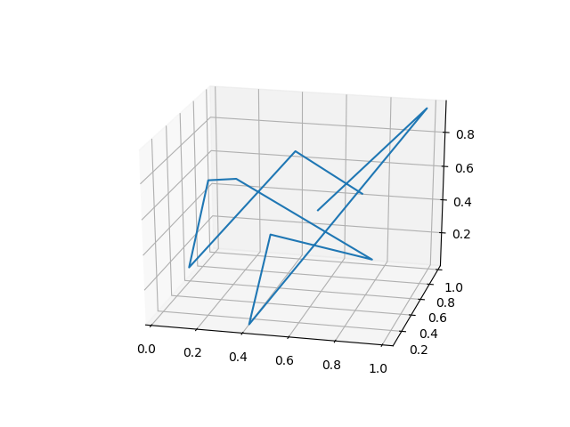
>>> contour3D(rand(10),rand(10),rand(10,10))
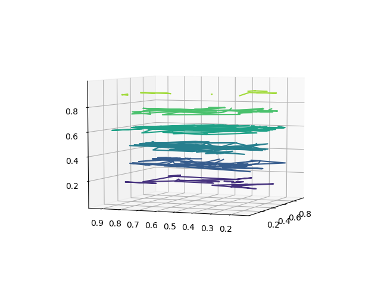
>>>asd=[i for i=1:100];plot_surface(asd,asd,asd*asd')
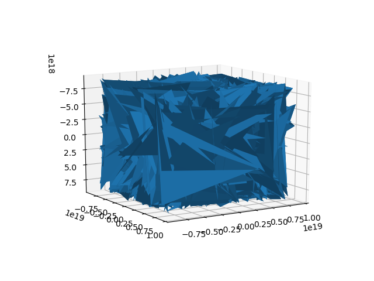
>>> plot_wireframe([i for i=1:100],[i for i=1:100],rand(100,100))
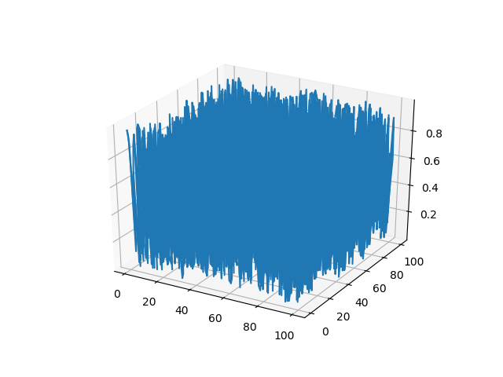
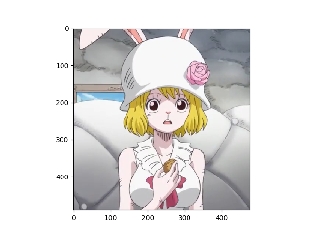
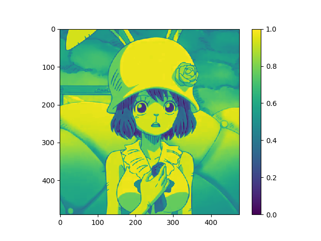
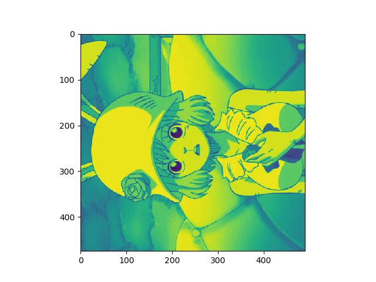
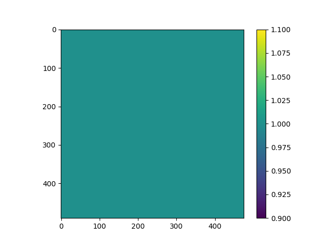
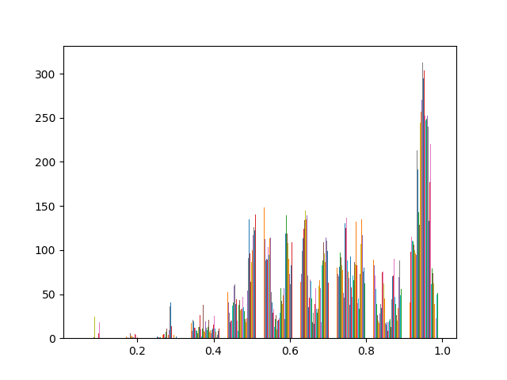
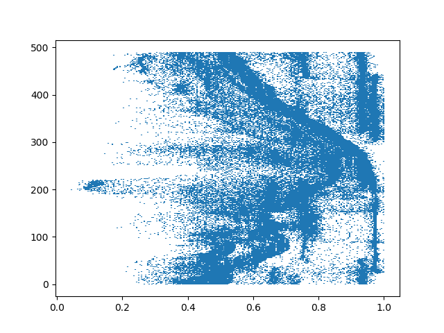
import matplotlib.pyplot as plt print(plt.style.available ) //查看可用的风格 style_one=['grayscale','fivethirtyeight','bmh','dark_background', 'seaborn-whitegrid', 'Solarize_Light2','seaborn-notebook', 'seaborn-paper', 'fast'] for iter in style_one : with plt.style.context(iter): plt.plot([1,2,3,4,5,6,7,8,5,4,3,9], 'k-o') plt.title(iter) plt.show()
plt.annotate('local max', xy=(2, 1), xytext=(3, 1.5), arrowprops=dict(facecolor='black', shrink=0.05), )
asda=[] for i=1:100 push!(asda,i) polar(asda) draw() # 要打开交互式环境 ion() sleep(1) end
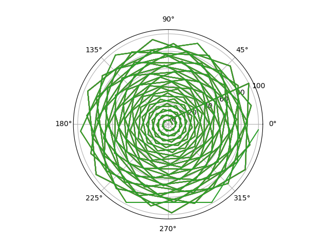